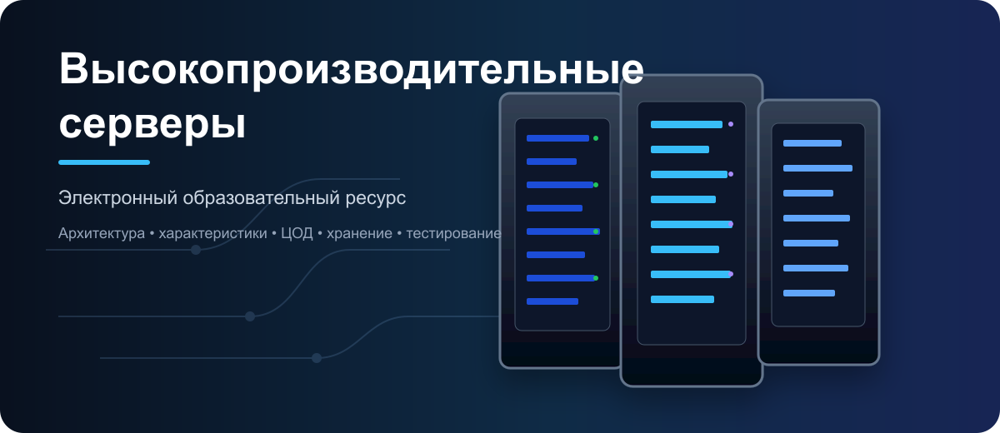
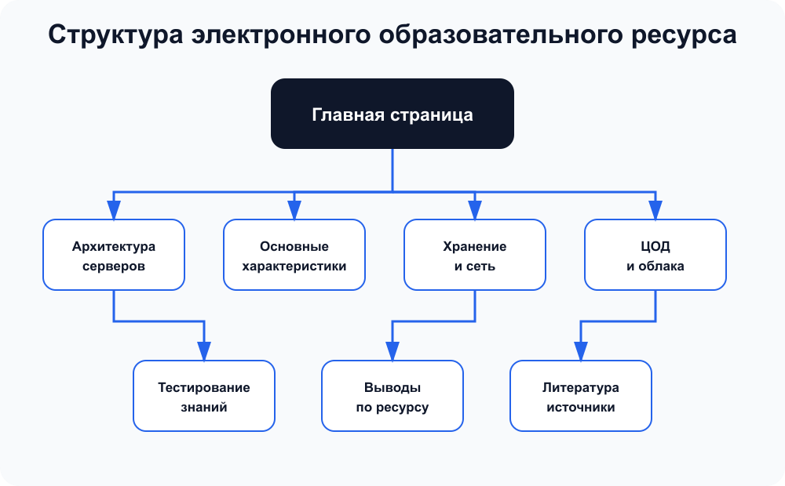

Главная страница электронного образовательного ресурса
Данный ресурс предназначен для изучения теоретических основ высокопроизводительных серверов: их архитектуры, ключевых характеристик, подсистем хранения, сетевого обмена, инженерной инфраструктуры и областей применения.
Цель и задачи ресурса
Цель ресурса — сформировать целостное представление о высокопроизводительных серверных системах и показать, почему производительность сервера определяется не одной характеристикой, а согласованной работой процессоров, памяти, накопителей, сети, охлаждения и средств управления.
- Рассмотреть аппаратную архитектуру современных серверов.
- Изучить основные показатели производительности и надёжности.
- Показать роль подсистем хранения и сетевого обмена.
- Рассмотреть сервер как элемент центра обработки данных.
- Проверить знания с помощью интерактивного теста.
Разделы ресурса
Структура электронного образовательного ресурса
